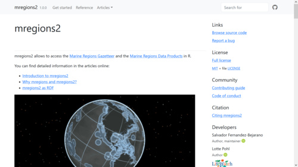
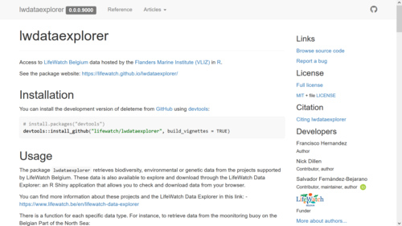
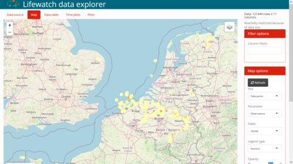
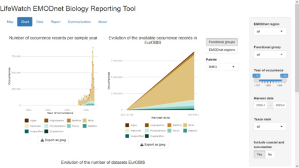
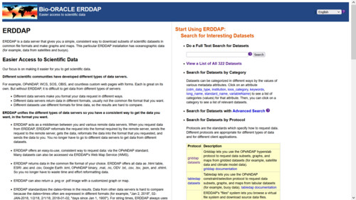
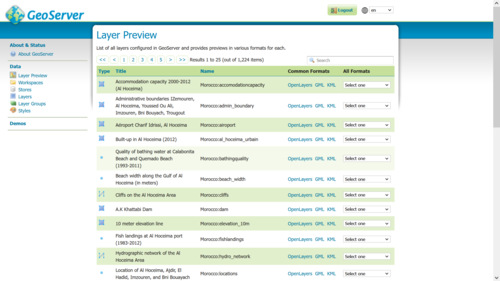

Portfolio
R packages
R packages I have developed, intensively collaborated or maintained.
mregions2
Access Data from Marineregions.org The Marine Regions Gazetteer and the Marine Regions Data Products

lwdataexplorer
Retrieves biodiversity, environmental or genetic data from the projects supported by LifeWatch Belgium

R Shiny apps
R Shiny applications that I have developed, intensively collaborated or maintained.
LifeWatch Data Explorer
Retrieves biodiversity, environmental or genetic data from the projects supported by LifeWatch Belgium

EMODnet-Biology Reporting Tool
Summarizes key metrics of the Biology lot of EMODnet for quarterly reporting

Data servers
Data servers I have worked on.
Bio-Oracle ERDDAP Server
Simple, consistent way to download subsets of scientific datasets in common file formats and make graphs and maps

VLIZ Geoserver
Publishes data from any major spatial data source using open standards

No matching items